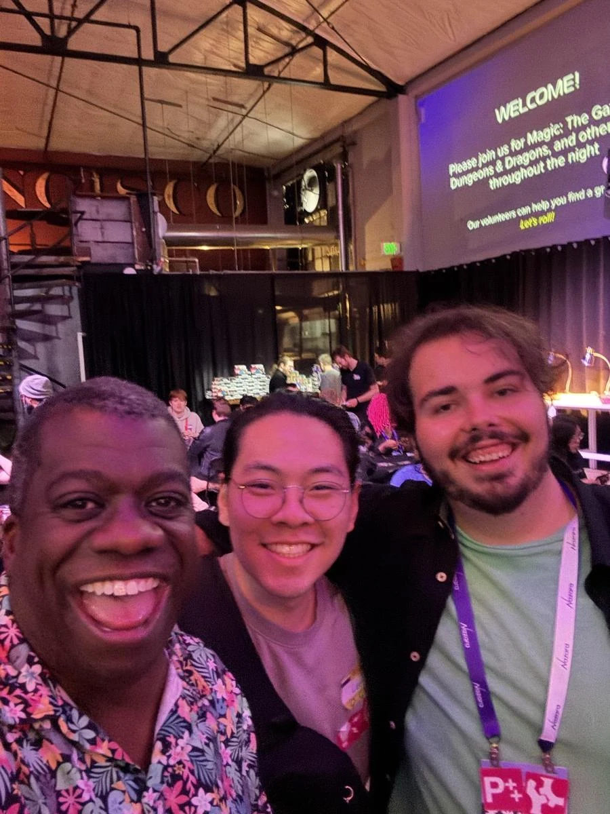

GATHERING · MON MAR 01 · 2027 · San Francisco
GGP · ZERO PROOF
Pull up a chair.
159days out
- When
- Mon Mar 1, 2027
- Where
- The Foundry SF · 1425 Folsom Street at 10th, San Francisco · Directions
- Light
- After dark
In the mix
Monday night at The Foundry SF: the 4th Annual Zero Proof Board Game Night. Eric, BrenBren, Alex and Foster, let’s make room at the table. Event hours will follow.
Notes to the crew
Before this night
4 real photographs from Gordon's album that lead here.


Dig into the sound and story
3 short chapters. Open the ones that call to you.
THE TABLEZero proof. Full of possibilities.
The fourth annual board game night gives us a different way to gather during GDC. There is no alcohol at the center of this evening. There are people, games, and room to join in.
THE TRADITIONA different kind of games-industry night.
The 2026 edition brought D&D, Magic and board games to Foundry SF. We return to The Foundry SF on Monday, March 1, 2027. The next night, the same address holds our annual mixer. Event hours will follow.
MONDAY INTO TUESDAYFirst, pull up a chair. Then, turn it up.
Eric, BrenBren, Alex and Foster on Monday. On Tuesday, the circle grows, and Foster and Sam become Fang Speare B2B Capnsmak. Two nights at The Foundry SF. Same gathering instinct. A different kind of play.
Before we go
Artist recordings open on their own players. Not a promised setlist.
Same crew, other nights
Swipe the picture, or use the arrow keys, for the next night.